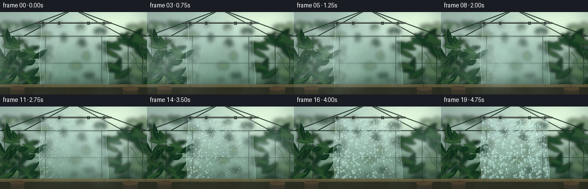

CODING AGENTS AS PIXEL WORLD MODELS
traex/DeepSeek-V4.1-Flash · phygen_104
点击播放 · 原生 RGB 像素
逐轮保存的候选
回放视频、检查图与代码变化。
每份候选均可单独播放。实际图片检查记录在下方工具轨迹中。
候选 01播放与检查图
点击播放 · 原生 RGB 像素

展开代码变化
--- 上一保存版本
+++ 本次保存版本
@@ -0,0 +1,608 @@
+from pathlib import Path
+
+import numpy as np
+from PIL import Image, ImageDraw, ImageFilter
+
+import artifact_io
+
+
+CASE_DIR = Path(__file__).resolve().parent
+W, H = 256, 144
+N, FPS = 20, 4.0
+SS = 3
+SW, SH = W * SS, H * SS
+
+
+def sx(value):
+ return int(round(value * SS))
+
+
+def sxy(x, y):
+ return sx(x), sx(y)
+
+
+def smoothstep(x):
+ x = np.clip(x, 0.0, 1.0)
+ return x * x * (3.0 - 2.0 * x)
+
+
+def rgba(color):
+ if len(color) == 3:
+ return tuple(int(v) for v in color) + (255,)
+ return tuple(int(v) for v in color)
+
+
+def noise_field(rng, grid_w, grid_h, width, height):
+ values = (rng.random((grid_h, grid_w)) * 255).astype(np.uint8)
+ image = Image.fromarray(values, "L").resize((width, height), Image.Resampling.BICUBIC)
+ return np.asarray(image, dtype=np.float32) / 255.0
+
+
+def fbm(rng, width, height, base_grid=(8, 5)):
+ fields = []
+ weights = [0.54, 0.29, 0.17]
+ for level, weight in enumerate(weights):
+ gw = max(3, base_grid[0] * (2**level))
+ gh = max(3, base_grid[1] * (2**level))
+ fields.append(weight * noise_field(rng, gw, gh, width, height))
+ return np.clip(sum(fields), 0.0, 1.0)
+
+
+def draw_leaf(draw, cx, cy, length, width, angle, color, vein_color, edge_color):
+ axis = np.array([np.cos(angle), np.sin(angle)], dtype=np.float32)
+ perp = np.array([-axis[1], axis[0]], dtype=np.float32)
+ left, right = [], []
+ for u in np.linspace(-0.5, 0.5, 17):
+ profile = np.sin(np.pi * (u + 0.5)) ** 0.72
+ bend = 0.10 * width * np.sin(np.pi * (u + 0.5))
+ center = np.array([cx, cy]) + axis * (u * length) + perp * bend
+ half = 0.5 * width * profile
+ left.append(sxy(*(center + perp * half)))
+ right.append(sxy(*(center - perp * half)))
+ polygon = left + right[::-1]
+ draw.polygon(polygon, fill=rgba(color), outline=rgba(edge_color))
+ tip = sxy(*(np.array([cx, cy]) - axis * (0.50 * length)))
+ base = sxy(*(np.array([cx, cy]) + axis * (0.48 * length)))
+ draw.line([base, tip], fill=rgba(vein_color), width=max(1, sx(0.35)))
+
+
+def leaf_color(rng, side, bright=False):
+ palettes = [
+ ((22, 57, 36), (58, 101, 61), (31, 72, 43)),
+ ((31, 70, 41), (83, 125, 70), (38, 85, 47)),
+ ((42, 82, 47), (111, 146, 81), (49, 94, 53)),
+ ((20, 52, 33), (52, 93, 53), (27, 65, 39)),
+ ]
+ base, vein, edge = palettes[int(rng.integers(0, len(palettes)))]
+ if bright:
+ base = tuple(min(255, c + 7) for c in base)
+ vein = tuple(min(255, c + 12) for c in vein)
+ if side < 0:
+ base = tuple(max(0, c - 4) for c in base)
+ return base, vein, edge
+
+
+def render_background():
+ y = np.linspace(0.0, 1.0, SH, dtype=np.float32)[:, None]
+ top = np.array([169, 194, 184], dtype=np.float32)
+ middle = np.array([106, 143, 120], dtype=np.float32)
+ bottom = np.array([39, 62, 48], dtype=np.float32)
+ low_mix = smoothstep((y - 0.18) / 0.66)
+ rgb = top[None, :] * (1.0 - low_mix) + middle[None, :] * low_mix
+ floor_mix = smoothstep((y - 0.70) / 0.34)
+ rgb = rgb * (1.0 - floor_mix) + bottom[None, :] * floor_mix
+ rgb = np.broadcast_to(rgb[:, None, :], (SH, SW, 3)).copy()
+
+ yy, xx = np.mgrid[0:SH, 0:SW].astype(np.float32)
+ xn, yn = xx / SW, yy / SH
+ sun = np.exp(-(((xn - 0.80) / 0.31) ** 2 + ((yn - 0.11) / 0.25) ** 2))
+ warm = np.array([255, 228, 164], dtype=np.float32)
+ rgb += sun[..., None] * warm[None, None, :] * 0.22
+
+ rng = np.random.default_rng(10401)
+ texture = noise_field(rng, 16, 9, SW, SH)
+ rgb += (texture[..., None] - 0.5) * np.array([8.0, 10.0, 8.0])
+ image = Image.fromarray(np.clip(rgb, 0, 255).astype(np.uint8), "RGB")
+
+ outside = Image.new("RGBA", (SW, SH), (0, 0, 0, 0))
+ od = ImageDraw.Draw(outside)
+ foliage_colors = [
+ (34, 70, 47, 190), (49, 89, 53, 185), (67, 105, 62, 170),
+ (87, 117, 69, 145), (22, 55, 38, 205),
+ ]
+ for _ in range(95):
+ x = float(rng.uniform(-18, W + 18))
+ yy0 = float(rng.uniform(20, 127))
+ if 34 < x < 222 and rng.random() < 0.72:
+ x = float(rng.choice([rng.uniform(-18, 35), rng.uniform(221, W + 18)]))
+ rw = float(rng.uniform(3.5, 14.0))
+ rh = float(rng.uniform(2.0, 8.5))
+ color = foliage_colors[int(rng.integers(0, len(foliage_colors)))]
+ od.ellipse(
+ [sx(x - rw), sx(yy0 - rh), sx(x + rw), sx(yy0 + rh)],
+ fill=color,
+ )
+ for _ in range(28):
+ x = float(rng.uniform(-10, W + 10))
+ yy0 = float(rng.uniform(18, 102))
+ radius = float(rng.uniform(1.0, 3.4))
+ od.ellipse(
+ [sx(x - radius), sx(yy0 - radius), sx(x + radius), sx(yy0 + radius)],
+ fill=(201, 220, 178, int(rng.uniform(20, 58))),
+ )
+ outside = outside.filter(ImageFilter.GaussianBlur(3.2 * SS))
+ image = Image.alpha_composite(image.convert("RGBA"), outside).convert("RGB")
+
+ draw = ImageDraw.Draw(image, "RGBA")
+ frame_dark = (36, 55, 45, 245)
+ frame_mid = (55, 77, 61, 245)
+ frame_light = (118, 139, 104, 125)
+ beam_width = max(2, sx(1.75))
+ thin_width = max(1, sx(0.85))
+
+ # Roof and wall glazing bars.
+ roof_lines = [
+ ((128, -5), (1, 42)),
+ ((128, -5), (255, 42)),
+ ((128, -5), (41, 42)),
+ ((128, -5), (215, 42)),
+ ((0, 42), (256, 42)),
+ ]
+ for start, end in roof_lines:
+ draw.line([sxy(*start), sxy(*end)], fill=frame_dark, width=beam_width)
+ draw.line(
+ [sxy(start[0] + 0.5, start[1] + 0.5), sxy(end[0] + 0.5, end[1] + 0.5)],
+ fill=frame_light,
+ width=max(1, sx(0.42)),
+ )
+
+ for x in (8, 33, 79, 177, 223, 248):
+ draw.line([sxy(x, 42), sxy(x, 127)], fill=frame_dark, width=thin_width)
+ draw.line([sxy(0, 89), sxy(256, 89)], fill=frame_mid, width=thin_width)
+ draw.line([sxy(0, 126), sxy(256, 126)], fill=(28, 45, 38, 240), width=sx(1.1))
+
+ # Soft reflected daylight on the panes.
+ glass = Image.new("RGBA", (SW, SH), (0, 0, 0, 0))
+ gd = ImageDraw.Draw(glass)
+ gd.polygon(
+ [sxy(128, 0), sxy(247, 40), sxy(213, 41), sxy(128, 8)],
+ fill=(229, 238, 216, 22),
+ )
+ gd.polygon(
+ [sxy(75, 45), sxy(126, 45), sxy(94, 125), sxy(33, 125)],
+ fill=(224, 238, 222, 12),
+ )
+ image = Image.alpha_composite(image.convert("RGBA"), glass).convert("RGB")
+ return image
+
+
+def draw_plants(image):
+ rng = np.random.default_rng(10411)
+ distant = Image.new("RGBA", (SW, SH), (0, 0, 0, 0))
+ dd = ImageDraw.Draw(distant)
+ for side in (-1, 1):
+ for _ in range(24):
+ if side < 0:
+ cx = float(rng.uniform(-9, 63))
+ else:
+ cx = float(rng.uniform(193, 265))
+ cy = float(rng.uniform(38, 126))
+ length = float(rng.uniform(17, 39))
+ width = float(rng.uniform(5.5, 12.0))
+ angle = float(rng.uniform(-1.25, 1.15))
+ if side < 0 and cx < 25:
+ angle += 0.25
+ if side > 0 and cx > 231:
+ angle -= 0.25
+ base, vein, edge = leaf_color(rng, side)
+ draw_leaf(dd, cx, cy, length, width, angle, base, vein, edge)
+ distant = distant.filter(ImageFilter.GaussianBlur(1.8 * SS))
+ image = Image.alpha_composite(image.convert("RGBA"), distant).convert("RGB")
+
+ foreground = Image.new("RGBA", (SW, SH), (0, 0, 0, 0))
+ fd = ImageDraw.Draw(foreground)
+ for side in (-1, 1):
+ stems = Image.new("RGBA", (SW, SH), (0, 0, 0, 0))
+ sd = ImageDraw.Draw(stems)
+ for _ in range(7):
+ x0 = float(rng.uniform(1, 34) if side < 0 else rng.uniform(222, 255))
+ y0 = float(rng.uniform(43, 92))
+ x1 = x0 + side * float(rng.uniform(8, 29))
+ y1 = y0 + float(rng.uniform(30, 54))
+ points = []
+ for u in np.linspace(0.0, 1.0, 12):
+ xx = x0 + (x1 - x0) * u + side * 2.2 * np.sin(u * 7.0)
+ yy = y0 + (y1 - y0) * u
+ points.append(sxy(xx, yy))
+ sd.line(points, fill=(44, 78, 47, 235), width=max(1, sx(1.0)))
+ sd.line(points, fill=(100, 132, 80, 95), width=max(1, sx(0.35)))
+
+ for _ in range(20):
+ if side < 0:
+ cx = float(rng.uniform(-5, 70))
+ else:
+ cx = float(rng.uniform(186, 261))
+ cy = float(rng.uniform(42, 132))
+ length = float(rng.uniform(13, 34))
+ width = float(rng.uniform(4.2, 9.7))
+ angle = float(rng.uniform(-1.20, 1.20))
+ if side < 0:
+ angle += 0.20
+ else:
+ angle -= 0.20
+ base, vein, edge = leaf_color(rng, side, bright=rng.random() < 0.25)
+ draw_leaf(fd, cx, cy, length, width, angle, base, vein, edge)
+ fd.line(
+ [sxy(cx - 1.0, cy + 1.1), sxy(cx + 1.0, cy - 1.1)],
+ fill=(151, 177, 111, 55),
+ width=max(1, sx(0.3)),
+ )
+ foreground = Image.alpha_composite(foreground, stems)
+ image = Image.alpha_composite(image.convert("RGBA"), foreground).convert("RGB")
+
+ # A low shelf gives the foreground a grounded greenhouse scale.
+ shelf = Image.new("RGBA", (SW, SH), (0, 0, 0, 0))
+ sh = ImageDraw.Draw(shelf)
+ sh.rectangle([sxy(0, 126), sxy(256, 144)], fill=(48, 50, 37, 245))
+ sh.rectangle([sxy(0, 126), sxy(256, 131)], fill=(104, 95, 64, 220))
+ sh.line([sxy(0, 126.5), sxy(256, 126.5)], fill=(151, 133, 84, 155), width=max(1, sx(0.6)))
+ for x in (31, 75, 181, 225):
+ sh.line([sxy(x, 127), sxy(x - 2, 144)], fill=(27, 33, 27, 125), width=max(1, sx(0.55)))
+ sh.rectangle([sxy(18, 132), sxy(42, 144)], fill=(75, 57, 43, 170))
+ sh.ellipse([sxy(17, 129), sxy(43, 136)], fill=(93, 69, 48, 190))
+ sh.rectangle([sxy(214, 133), sxy(240, 144)], fill=(71, 56, 43, 170))
+ sh.ellipse([sxy(213, 130), sxy(241, 137)], fill=(99, 74, 52, 190))
+ image = Image.alpha_composite(image.convert("RGBA"), shelf).convert("RGB")
+ return image
+
+
+def sheet_edges(y):
+ y = np.asarray(y, dtype=np.float32)
+ left = 70.5 + 1.7 * np.sin((y - 21.0) * 0.070 + 0.55) - 0.018 * (y - 21.0)
+ right = 185.5 + 1.6 * np.sin((y - 21.0) * 0.061 + 2.10) + 0.014 * (y - 21.0)
+ return left, right
+
+
+def make_sheet_mask():
+ mask = Image.new("L", (SW, SH), 0)
+ md = ImageDraw.Draw(mask)
+ ys = np.linspace(21.0, 126.0, 240)
+ left, right = sheet_edges(ys)
+ points = [sxy(x, y) for x, y in zip(left, ys)]
+ points += [sxy(x, y) for x, y in zip(right[::-1], ys[::-1])]
+ md.polygon(points, fill=255)
+ return mask
+
+
+def draw_sheet(image, mask):
+ arr = np.asarray(image, dtype=np.float32)
+ mask_f = np.asarray(mask, dtype=np.float32)[..., None] / 255.0
+ softened = image.filter(ImageFilter.GaussianBlur(1.15 * SS))
+ shifted = np.roll(np.asarray(softened, dtype=np.float32), (SS, SS // 2), axis=(0, 1))
+ arr = arr * (1.0 - 0.36 * mask_f) + shifted * (0.36 * mask_f)
+
+ yy = np.linspace(0.0, 1.0, SH, dtype=np.float32)[:, None, None]
+ tint = np.array([157, 201, 197], dtype=np.float32)[None, None, :]
+ tint = tint * (0.88 + 0.10 * yy)
+ arr = arr * (1.0 - 0.145 * mask_f) + tint * (0.145 * mask_f)
+ image = Image.fromarray(np.clip(arr, 0, 255).astype(np.uint8), "RGB")
+
+ overlay = Image.new("RGBA", (SW, SH), (0, 0, 0, 0))
+ draw = ImageDraw.Draw(overlay)
+ # Broad diagonal sheen and a quieter counter-sheen.
+ draw.polygon(
+ [sxy(84, 23), sxy(111, 22), sxy(81, 125), sxy(69, 125)],
+ fill=(218, 239, 232, 24),
+ )
+ draw.polygon(
+ [sxy(145, 22), sxy(157, 22), sxy(176, 125), sxy(168, 125)],
+ fill=(235, 246, 238, 13),
+ )
+
+ wrinkle_specs = [
+ (82, 91, 1.7, 0.2, 62),
+ (102, 112, 1.2, 1.5, 54),
+ (127, 119, 1.5, 2.8, 45),
+ (151, 143, 1.4, 0.8, 58),
+ (174, 165, 1.1, 2.1, 50),
+ ]
+ for x0, x1, amp, phase, alpha in wrinkle_specs:
+ points = []
+ for y in np.linspace(23, 125, 70):
+ u = (y - 23.0) / 102.0
+ x = x0 + (x1 - x0) * u + amp * np.sin(u * 8.2 + phase)
+ points.append(sxy(x, y))
+ draw.line(points, fill=(38, 78, 78, int(alpha * 0.42)), width=max(1, sx(0.45)))
+ highlight = [(x + sx(0.45), y - sx(0.35)) for x, y in points]
+ draw.line(highlight, fill=(220, 241, 233, alpha), width=max(1, sx(0.28)))
+
+ # Irregular rim catches the cool window light.
+ ys = np.linspace(21, 126, 180)
+ left, right = sheet_edges(ys)
+ left_pts = [sxy(x, y) for x, y in zip(left, ys)]
+ right_pts = [sxy(x, y) for x, y in zip(right, ys)]
+ draw.line(left_pts, fill=(207, 234, 228, 155), width=max(1, sx(0.62)))
+ draw.line(right_pts, fill=(202, 230, 225, 148), width=max(1, sx(0.55)))
+ draw.line([sxy(70.5, 21), sxy(185.5, 21)], fill=(226, 242, 234, 175), width=max(1, sx(0.8)))
+
+ # Suspension rail and four small clamps.
+ draw.rectangle([sxy(62, 17.7), sxy(194, 20.3)], fill=(58, 66, 60, 225))
+ draw.line([sxy(63, 18.2), sxy(193, 18.2)], fill=(166, 178, 157, 165), width=max(1, sx(0.45)))
+ for x in (75, 103, 154, 181):
+ draw.rounded_rectangle(
+ [sxy(x - 2.5, 16.8), sxy(x + 2.5, 22.0)],
+ radius=sx(0.8),
+ fill=(35, 45, 42, 235),
+ outline=(125, 141, 124, 150),
+ width=max(1, sx(0.25)),
+ )
+ draw.line([sxy(x, 17.4), sxy(x, 21.2)], fill=(177, 192, 170, 90), width=max(1, sx(0.28)))
+ return Image.alpha_composite(image.convert("RGBA"), overlay).convert("RGB")
+
+
+def precompute_noise():
+ rng = np.random.default_rng(10421)
+ return {
+ "fog_a": fbm(rng, W, H, (7, 5)),
+ "fog_b": fbm(rng, W, H, (10, 6)),
+ "fog_c": fbm(rng, W, H, (16, 9)),
+ "sheet": noise_field(rng, 42, 35, W, H),
+ "grain": noise_field(rng, 160, 90, W, H) - 0.5,
+ }
+
+
+def fog_alpha(frame_index, noise):
+ t = frame_index / (N - 1)
+ yy, xx = np.mgrid[0:H, 0:W].astype(np.float32)
+ xn, yn = xx / (W - 1), yy / (H - 1)
+ center_x = -0.13 + 1.34 * t
+ center_y = 0.50 + 0.10 * np.sin(t * np.pi * 1.4 + 0.25)
+ sigma_x = 0.255 + 0.045 * np.sin(t * 4.0)
+ sigma_y = 0.295
+ plume = np.exp(
+ -((xn - center_x) / sigma_x) ** 2
+ -((yn - center_y) / sigma_y) ** 2
+ )
+ fine = (
+ 0.50 * np.roll(noise["fog_a"], int(22 * t), axis=1)
+ + 0.32 * np.roll(noise["fog_b"], int(-31 * t), axis=1)
+ + 0.18 * np.roll(noise["fog_c"], int(9 * t), axis=0)
+ )
+ wisps = smoothstep((fine - 0.31) / 0.48)
+ edge_feather = 0.45 + 0.82 * wisps
+ density = plume * edge_feather
+ density += 0.10 * smoothstep((noise["fog_b"] - 0.48) / 0.42) * (0.35 + 0.65 * (1.0 - abs(xn - 0.5)))
+ density *= 1.0 - 0.10 * t
+ return np.clip(density, 0.0, 1.0)
+
+
+def apply_fog(image, density, strength=0.43):
+ alpha = np.clip(density * strength, 0.0, 0.52)
+ alpha_img = Image.fromarray((alpha * 255).astype(np.uint8), "L")
+ alpha_full = np.asarray(
+ alpha_img.resize((SW, SH), Image.Resampling.BICUBIC),
+ dtype=np.float32,
+ )[..., None] / 255.0
+ yy = np.linspace(0.0, 1.0, SH, dtype=np.float32)[:, None, None]
+ fog_color = np.array([198, 224, 218], dtype=np.float32)[None, None, :]
+ fog_color = fog_color * (1.04 - 0.09 * yy)
+ arr = np.asarray(image, dtype=np.float32)
+ arr = arr * (1.0 - alpha_full) + fog_color * alpha_full
+ return Image.fromarray(np.clip(arr, 0, 255).astype(np.uint8), "RGB")
+
+
+def droplet_seeds():
+ rng = np.random.default_rng(10431)
+ drops = []
+ for _ in range(880):
+ y = 23.2 + (rng.random() ** 1.03) * (125.0 - 23.2)
+ left, right = sheet_edges(y)
+ margin = 2.0
+ x = float(rng.uniform(left + margin, right - margin))
+ xnorm = (x - left) / (right - left)
+ ynorm = (y - 21.0) / 105.0
+ activation = 0.045 + 0.55 * xnorm + 0.16 * ynorm + 0.20 * rng.random()
+ activation = float(np.clip(activation, 0.02, 0.93))
+ final_r = 0.24 + 2.65 * (rng.random() ** 2.55)
+ drops.append(
+ {
+ "x": x,
+ "y": y,
+ "activation": activation,
+ "radius": final_r,
+ "phase": float(rng.uniform(0, 2 * np.pi)),
+ "large": bool(rng.random() < 0.035),
+ }
+ )
+ return drops
+
+
+def draw_droplets(image, frame_index, drops):
+ t = frame_index / (N - 1)
+ layer = Image.new("RGBA", (SW, SH), (0, 0, 0, 0))
+ draw = ImageDraw.Draw(layer)
+ for drop in drops:
+ age = (t - drop["activation"]) / max(1.0 - drop["activation"], 0.13)
+ if age <= 0.0:
+ continue
+ age = float(smoothstep(age))
+ radius = drop["radius"] * (0.18 + 0.82 * age)
+ if drop["large"]:
+ radius *= 1.18
+ if radius < 0.20:
+ continue
+ cx, cy = drop["x"], drop["y"]
+ rr = radius
+ shadow_alpha = int(np.clip(70 + 50 * age, 0, 115))
+ draw.ellipse(
+ [sxy(cx - rr * 0.95 + 0.24, cy - rr * 0.95 + 0.42), sxy(cx + rr * 0.95 + 0.24, cy + rr * 0.95 + 0.42)],
+ fill=(28, 67, 68, shadow_alpha),
+ )
+ fill_alpha = int(np.clip(34 + 62 * age, 0, 96))
+ draw.ellipse(
+ [sxy(cx - rr, cy - rr), sxy(cx + rr, cy + rr)],
+ fill=(154, 208, 207, fill_alpha),
+ outline=(210, 237, 230, int(80 + 95 * age)),
+ width=max(1, sx(0.22)) if rr > 0.52 else 1,
+ )
+ if rr > 0.52:
+ hr = max(0.10, rr * 0.27)
+ hx = cx - rr * 0.30 + 0.06 * np.sin(drop["phase"])
+ hy = cy - rr * 0.34
+ draw.ellipse(
+ [sxy(hx - hr, hy - hr * 1.35), sxy(hx + hr, hy + hr * 1.35)],
+ fill=(245, 252, 244, int(115 + 95 * age)),
+ )
+ if rr > 1.45:
+ draw.arc(
+ [sxy(cx - rr * 0.82, cy - rr * 0.82), sxy(cx + rr * 0.82, cy + rr * 0.82)],
+ start=10,
+ end=142,
+ fill=(239, 249, 239, int(75 + 80 * age)),
+ width=max(1, sx(0.24)),
+ )
+ return Image.alpha_composite(image.convert("RGBA"), layer).convert("RGB")
+
+
+def draw_rivulets(image, frame_index):
+ t = frame_index / (N - 1)
+ if t < 0.46:
+ return image
+ layer = Image.new("RGBA", (SW, SH), (0, 0, 0, 0))
+ draw = ImageDraw.Draw(layer)
+ rng = np.random.default_rng(10441)
+ for _ in range(7):
+ x0 = float(rng.uniform(78, 178))
+ start_y = float(rng.uniform(48, 92))
+ activation = float(rng.uniform(0.46, 0.68))
+ progress = float(smoothstep((t - activation) / max(1.0 - activation, 0.12)))
+ if progress <= 0.0:
+ continue
+ run = 7.0 + float(rng.uniform(0, 10)) * progress
+ phase = float(rng.uniform(0, 2 * np.pi))
+ points = []
+ for u in np.linspace(0.0, 1.0, 30):
+ yy = start_y + run * u
+ xx = x0 + 1.0 * np.sin(u * 5.0 + phase)
+ points.append(sxy(xx, yy))
+ draw.line(points, fill=(217, 240, 232, int(18 + 38 * progress)), width=max(1, sx(0.42)))
+ bead_y = start_y + run
+ bead_x = x0 + 1.0 * np.sin(5.0 + phase)
+ br = 0.85 + 0.65 * progress
+ draw.ellipse(
+ [sxy(bead_x - br, bead_y - br), sxy(bead_x + br, bead_y + br)],
+ fill=(162, 215, 211, 105),
+ outline=(231, 247, 238, 165),
+ width=max(1, sx(0.24)),
+ )
+ draw.ellipse(
+ [sxy(bead_x - br * 0.28, bead_y - br * 0.50), sxy(bead_x + br * 0.12, bead_y - br * 0.12)],
+ fill=(249, 253, 244, 190),
+ )
+ return Image.alpha_composite(image.convert("RGBA"), layer).convert("RGB")
+
+
+def draw_sheet_microtexture(image, frame_index, mask, noise):
+ t = frame_index / (N - 1)
+ mask_f = np.asarray(mask, dtype=np.float32)[..., None] / 255.0
+ texture = np.asarray(
+ Image.fromarray((noise["sheet"] * 255).astype(np.uint8)).resize(
+ (SW, SH), Image.Resampling.BILINEAR
+ ),
+ dtype=np.float32,
+ )[..., None] / 255.0
+ amount = 0.025 + 0.085 * smoothstep((t - 0.22) / 0.72)
+ arr = np.asarray(image, dtype=np.float32)
+ pearl = np.array([215, 235, 229], dtype=np.float32)[None, None, :]
+ arr = arr * (1.0 - amount * mask_f) + pearl * amount * mask_f
+ speckle = (texture - 0.5) * 10.0 * smoothstep((t - 0.15) / 0.7)
+ arr += speckle * mask_f
+ return Image.fromarray(np.clip(arr, 0, 255).astype(np.uint8), "RGB")
+
+
+def draw_motes(image, frame_index):
+ t = frame_index / (N - 1)
+ rng = np.random.default_rng(10451)
+ layer = Image.new("RGBA", (SW, SH), (0, 0, 0, 0))
+ draw = ImageDraw.Draw(layer)
+ for _ in range(58):
+ x0 = float(rng.uniform(-10, W + 10))
+ y0 = float(rng.uniform(20, 126))
+ speed = float(rng.uniform(16, 45))
+ x = (x0 + speed * t + 2.0 * np.sin(t * 7.0 + y0)) % (W + 20) - 10
+ y = y0 + 1.2 * np.sin(t * 5.0 + x0 * 0.08)
+ plume_center = -0.13 + 1.34 * t
+ local = np.exp(-((x / W - plume_center) / 0.25) ** 2)
+ if local < 0.08:
+ continue
+ radius = float(rng.uniform(0.18, 0.78))
+ alpha = int(np.clip(18 + 70 * local * rng.random(), 0, 90))
+ draw.ellipse(
+ [sxy(x - radius, y - radius), sxy(x + radius, y + radius)],
+ fill=(229, 242, 232, alpha),
+ )
+ layer = layer.filter(ImageFilter.GaussianBlur(0.30 * SS))
+ return Image.alpha_composite(image.convert("RGBA"), layer).convert("RGB")
+
+
+def finish_frame(image, frame_index, noise):
+ arr = np.asarray(image, dtype=np.float32)
+ # Gentle highlight bloom, as if the greenhouse glass is diffusing daylight.
+ highlights = np.clip(arr - 178.0, 0.0, None)
+ bloom = Image.fromarray(np.clip(highlights, 0, 255).astype(np.uint8), "RGB")
+ bloom = bloom.filter(ImageFilter.GaussianBlur(2.2 * SS))
+ arr += np.asarray(bloom, dtype=np.float32) * 0.20
+
+ yy, xx = np.mgrid[0:SH, 0:SW].astype(np.float32)
+ xn = (xx / (SW - 1) - 0.5) * 2.0
+ yn = (yy / (SH - 1) - 0.5) * 2.0
+ vignette = np.clip(1.0 - 0.105 * (xn * xn * 0.62 + yn * yn * 0.38), 0.82, 1.0)
+ arr *= vignette[..., None]
+
+ grain = np.roll(noise["grain"], (frame_index * 13, frame_index * 19), axis=(0, 1))
+ grain_full = np.asarray(
+ Image.fromarray(((grain + 0.5) * 255).astype(np.uint8), "L").resize((SW, SH), Image.Resampling.BILINEAR),
+ dtype=np.float32,
+ ) / 255.0 - 0.5
+ arr += grain_full[..., None] * 3.0
+
+ arr = (arr - 126.0) * 1.035 + 126.0
+ return np.clip(arr, 0, 255).astype(np.uint8)
+
+
+def main():
+ base = draw_plants(render_background())
+ mask = make_sheet_mask()
+ noise = precompute_noise()
+ drops = droplet_seeds()
+ frames = []
+
+ for index in range(N):
+ density = fog_alpha(index, noise)
+ frame = apply_fog(base, density, strength=0.39)
+ frame = draw_sheet(frame, mask)
+ frame = draw_sheet_microtexture(frame, index, mask, noise)
+ frame = draw_droplets(frame, index, drops)
+ frame = draw_rivulets(frame, index)
+ front = np.clip((density - 0.23) / 0.77, 0.0, 1.0) ** 1.7
+ frame = apply_fog(frame, front, strength=0.18)
+ frame = draw_motes(frame, index)
+ frames.append(finish_frame(frame, index, noise))
+
+ rendered = np.stack(frames).astype(np.uint8)
+ frames = np.stack(
+ [
+ np.asarray(
+ Image.fromarray(frame).resize((W, H), Image.Resampling.LANCZOS),
+ dtype=np.uint8,
+ )
+ for frame in rendered
+ ]
+ )
+ artifact_io.save(frames, CASE_DIR)
+ print(f"saved {frames.shape} RGB frames to {CASE_DIR}")
+ print(f"frame mean range: {frames.mean(axis=(1, 2, 3)).min():.2f}..{frames.mean(axis=(1, 2, 3)).max():.2f}")
+
+
+if __name__ == "__main__":
+ main()
候选 02播放与检查图
点击播放 · 原生 RGB 像素
展开代码变化
--- 上一保存版本
+++ 本次保存版本
@@ -279,12 +279,12 @@
mask_f = np.asarray(mask, dtype=np.float32)[..., None] / 255.0
softened = image.filter(ImageFilter.GaussianBlur(1.15 * SS))
shifted = np.roll(np.asarray(softened, dtype=np.float32), (SS, SS // 2), axis=(0, 1))
- arr = arr * (1.0 - 0.36 * mask_f) + shifted * (0.36 * mask_f)
+ arr = arr * (1.0 - 0.42 * mask_f) + shifted * (0.42 * mask_f)
yy = np.linspace(0.0, 1.0, SH, dtype=np.float32)[:, None, None]
- tint = np.array([157, 201, 197], dtype=np.float32)[None, None, :]
+ tint = np.array([143, 190, 187], dtype=np.float32)[None, None, :]
tint = tint * (0.88 + 0.10 * yy)
- arr = arr * (1.0 - 0.145 * mask_f) + tint * (0.145 * mask_f)
+ arr = arr * (1.0 - 0.125 * mask_f) + tint * (0.125 * mask_f)
image = Image.fromarray(np.clip(arr, 0, 255).astype(np.uint8), "RGB")
overlay = Image.new("RGBA", (SW, SH), (0, 0, 0, 0))
@@ -433,7 +433,7 @@
continue
cx, cy = drop["x"], drop["y"]
rr = radius
- shadow_alpha = int(np.clip(70 + 50 * age, 0, 115))
+ shadow_alpha = int(np.clip(82 + 54 * age, 0, 130))
draw.ellipse(
[sxy(cx - rr * 0.95 + 0.24, cy - rr * 0.95 + 0.42), sxy(cx + rr * 0.95 + 0.24, cy + rr * 0.95 + 0.42)],
fill=(28, 67, 68, shadow_alpha),
@@ -441,8 +441,8 @@
fill_alpha = int(np.clip(34 + 62 * age, 0, 96))
draw.ellipse(
[sxy(cx - rr, cy - rr), sxy(cx + rr, cy + rr)],
- fill=(154, 208, 207, fill_alpha),
- outline=(210, 237, 230, int(80 + 95 * age)),
+ fill=(132, 192, 195, fill_alpha),
+ outline=(220, 246, 240, int(105 + 105 * age)),
width=max(1, sx(0.22)) if rr > 0.52 else 1,
)
if rr > 0.52:
候选 03播放与检查图
可观测工具轨迹
实际执行的命令与返回图片。
命令 1exit 0
/bin/bash -c 'cat prompt.txt'
命令 2exit 0
/bin/bash -c 'cat GENERATION_RULES.md'
命令 3exit 0
/bin/bash -c 'cat task_spec.json'
命令 4exit 0
/bin/bash -c "find . -maxdepth 2 -type f -printf '%p\\n' | sort | head -200"
命令 5exit 0
/bin/bash -c "sed -n '1,260p' artifact_io.py"
命令 6exit 0
/bin/bash -c "sed -n '1,240p' player_template.html"
命令 7exit 0
/bin/bash -c "python - <<'PY'
import numpy, PIL
print('numpy', numpy.__version__)
print('PIL', PIL.__version__)
PY"命令 8exit 0
/bin/bash -c 'git status --short'
命令 9exit 1
/bin/bash -c 'python generate.py'
命令 10exit 1
/bin/bash -c 'python generate.py'
命令 11exit 1
/bin/bash -c 'python generate.py'
命令 12exit 0
/bin/bash -c 'python generate.py'
命令 13exit 0
/bin/bash -c 'command -v chafa || true; command -v viu || true; command -v img2txt || true; command -v jp2 || true'
命令 14exit 0
/bin/bash -c "python - <<'PY'
from pathlib import Path
import numpy as np
from PIL import Image
p=Path('frames')
fs=sorted(p.glob('*.png'))
a=np.stack([np.asarray(Image.open(f)) for f in fs])
print('shape',a.shape,'dtype',a.dtype)
print('channel mean/std',a.mean((0,1,2)).round(2),a.std((0,1,2)).round(2))
d=np.abs(a[1:].astype(np.int16)-a[:-1].astype(np.int16))
print('consecutive mean abs diff',d.mean((1,2,3)).round(2))
print('consecutive changed fraction >2',(d.max(3)>2).mean((1,2)).round(3))
print('frame luminance means',a.mean(3).mean((1,2)).round(1))
print('frame saturation',(a.max(3)-a.min(3)).mean((1,2)).round(1))
# sheet center versus outside luminance and contrast
for i in [0,5,10,15,19]:
lum=a[i].mean(2)
print(i,'sheet',lum[30:120,72:184].mean().round(1),'edge bg',lum[30:120,:50].mean().round(1),'min/max',a[i].min(),a[i].max())
PY"命令 15exit 0
/bin/bash -c "python - <<'PY'
import json, base64, numpy as np
from PIL import Image
z=np.load('pixels.npz')
print('npz',z['pixels'].shape,z['pixels'].dtype)
html=open('index.html').read()
print('player bytes',len(html),'ready hook', '__pixelReady' in html,'frames encoded',html.count('\"deltas\"'))
print('artifact files:')
for f in ['pixels.npz','index.html','inspection.png','transition_check.png','frames/00.png','frames/19.png']:
import os
print(f,os.path.getsize(f))
PY"命令 16exit 0
/bin/bash -c 'python generate.py'
命令 17exit 0
/bin/bash -c "python - <<'PY'
from PIL import Image
import numpy as np
for idx in (0,5,10,15,19):
a=np.asarray(Image.open(f'frames/{idx:02d}.png')).astype(float)
# Central sheet crop: report texture contrast and cold/light droplet count.
c=a[24:124,73:183]
lum=c.mean(2)
edge=np.abs(np.diff(lum,axis=0)).mean()+np.abs(np.diff(lum,axis=1)).mean()
bright=(lum>170).mean()
cyan=((c[...,1]+c[...,2])/2-c[...,0]>15).mean()
print(f'{idx:02d}: sheet_lum={lum.mean():.1f} texture={edge:.2f} bright={bright:.3f} cyan={cyan:.3f}')
PY"保存候选 3 份；完成命令 17 次；可验证图片返回 0 张。原始 API 响应与完整日志保留在本地。